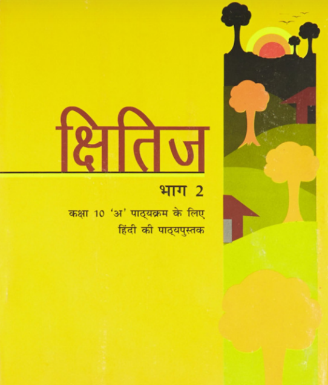

Free chapter-wise NCERT Solutions prepared according to the latest CBSE syllabus with detailed explanations and exam-oriented answers.
NCERT Solutions

Select a chapter below to access accurate, chapter-wise NCERT Solutions aligned with the latest CBSE curriculum.
Yes. All solutions are free.
Yes, they follow the latest NCERT and CBSE curriculum.